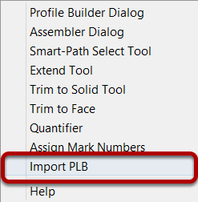
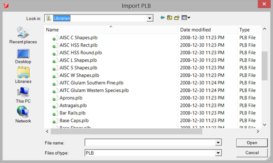
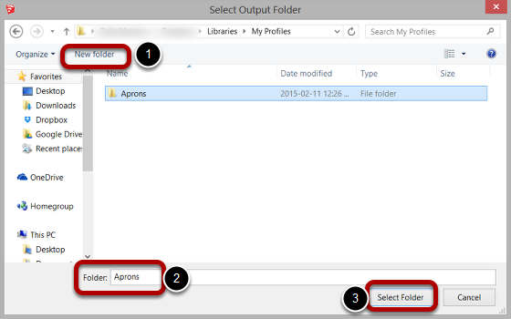

PLB files were used in the original version of Profile Builder to store a library of Profiles. These files are now obsolete but they can be imported and have the profiles converted to SKP files.

The PLB file must have been created using the original version of Profile Builder.

Create a new folder if necessary and give it a name.
A new SKP file will be created for each profile in the PLB file.